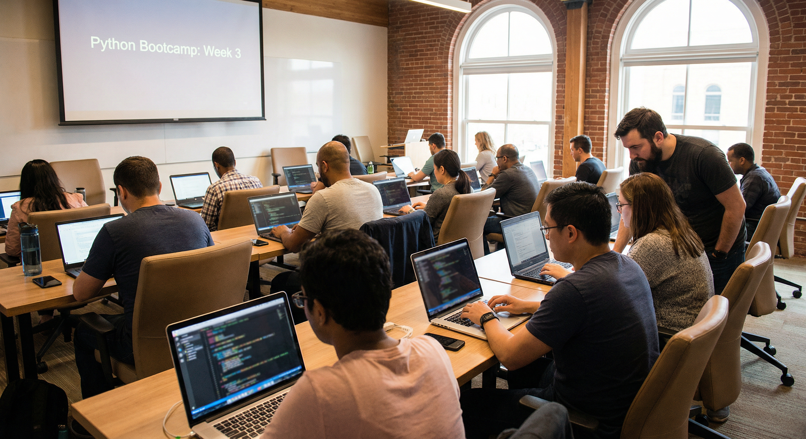

Our courses
Four intensive bootcamps: Python, Data Science, AI and Agentic AI. Take one or combine them to build a complete data and AI skill set.
Python Language
Our foundational programme for anyone new to programming or switching into tech. You’ll learn core Python, object-oriented design, working with APIs, testing and debugging, and how to use modern tooling (git, environments, IDEs). By the end you’ll be ready to move on to Data Science or AI—or to build scripts and small applications on your own.
-
Variables, types, control flow and functions
-
OOP, modules and packages
-
APIs, file I/O and data handling
-
Testing, debugging and best practices

Hands-on Python foundations for everything we teach.
Data Science
Statistics, visualisation and machine learning with Python. We use real datasets and tools like pandas, NumPy, Matplotlib/Seaborn and scikit-learn. You’ll build end-to-end pipelines: load data, explore it, model it and communicate results. Ideal after completing Python or if you already code and want to specialise in data.
-
Exploratory data analysis and visualisation
-
Statistics and hypothesis testing
-
Supervised and unsupervised ML with scikit-learn
-
Portfolio projects with real-world data
Work with real datasets and communicate insights clearly.
AI
Modern AI for builders: large language models, embeddings, retrieval-augmented generation (RAG) and fine-tuning. You’ll use popular APIs and open-source models, and learn how to design, prompt and evaluate AI applications. This course assumes solid Python; some exposure to data or ML is helpful but not required.
-
LLM APIs, prompting and evaluation
-
Embeddings and vector databases
-
RAG and document Q&A systems
-
Fine-tuning and deployment basics
Build and ship intelligent applications with modern AI stacks.
Agentic AI
The next step after classic AI: agents that use tools, plan and act. We cover agent architectures, tool use, orchestration (including frameworks and patterns), and how to build reliable, observable agent systems. Best taken after our AI course or with equivalent experience in LLMs and APIs.
-
Agent design and tool-calling
-
Orchestration and multi-step workflows
-
Observability, safety and evaluation
-
Hands-on agent projects
Questions about which course to choose? We’re happy to help you pick the right track.